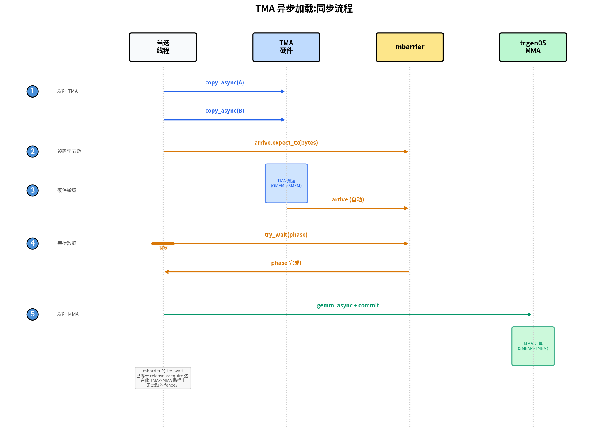
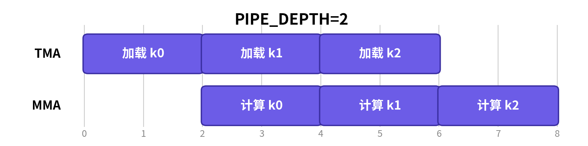

Pipelining GEMM with TMA#
Overview
The basic GEMM wastes time taking turns (copy a tile, compute, copy the next) when the two could run at once.
Step 4 switches to TMA async loads, Step 5 double-buffers SMEM and prefetches (PIPE_DEPTH=2); full load/compute overlap arrives with warp specialization in Step 7, Step 6 makes the kernel persistent with a tile scheduler.
The goal is to load the next tile while the Tensor Cores chew through the current one.
The Tensor Cores are the most expensive unit on the chip, and the correct tiled GEMM from the previous chapter leaves them idle for most of the clock. The kernel takes turns: threads copy a tile into shared memory, the Tensor Cores chew through it, threads copy the next tile, and the Tensor Cores wait. Each stage stalls on the one before it, even though loading the next tile and computing on the current one use entirely separate hardware and could run at the same time. Closing that gap does not require a new data path; the tiles, the layouts, and the math are already right. What has to change is when the work happens and by whom it is scheduled. This chapter keeps the tile data path exactly as it was and attacks the idleness directly.
We get there in three incremental steps, and it helps to know the destination before we start. In Step 4 we hand the bulk GMEM <-> SMEM transfers to TMA, so that dedicated copy hardware moves the tiles instead of the threads. In Step 5 we add a two-stage software pipeline, giving the next K tile somewhere to land while the current one is still being multiplied. And in Step 6 we reshape the launch into a persistent kernel driven by a tile scheduler, which amortizes the per-tile setup and lets us pick a tile order that keeps operands hot. Throughout, the SMEM, TMEM, and register layouts stay exactly as we left them in the previous chapter. The only genuinely new idea is the asynchronous handoff between hardware units: letting one engine run ahead of another instead of marching them in lockstep.
Step 4: TMA Async Load#
Our first move is to get the copy itself off the critical path. Think about what the CTA was doing in Steps 1-3: every one of its threads computes addresses and issues load instructions for no reason other than to shuttle tiles into SMEM. That is instruction bandwidth spent on plumbing rather than on math. Step 4 replaces the synchronous Tx.copy with TMA, where a single thread issues one command and the TMA engine carries out the whole tile transfer on its own. From here on the examples run at the full M=N=K=4096 size rather than the small sizes of Steps 1-3, and their end-to-end timings appear in the End-to-End Result table at the end of Scaling GEMM with Warp Specialization and Clusters.
What this step changes: Dispatch
Scope: unchanged, one warpgroup.
Layout: unchanged, same SMEM/TMEM/register tiles.
Dispatch: GMEM → SMEM loads move from sync
Tx.copyto the TMA engine.
TMA Issue Pattern#
Step 4’s one change is to replace the synchronous tile copy with a TMA load, so it pays to look closely at how that load is issued. The edit to the source is only a few lines, but the execution model behind those lines is different in kind. A synchronous Tx.copy is work that the CTA threads do themselves, with their own instructions; a TMA copy is a command that one thread issues, after which the TMA hardware does all the moving. It is worth seeing the two side by side.
Before (Step 3): all 128 threads participate in the copy, then cta_sync makes the shared-memory writes visible:
Tx.cta.copy(Asmem[:, :], A[m_st:m_st+BLK_M, i*BLK_K:(i+1)*BLK_K]) # all 128 threads
Tx.cta.copy(Bsmem[:, :], B[n_st:n_st+BLK_N, i*BLK_K:(i+1)*BLK_K])
T.cuda.cta_sync()
After (Step 4): one thread issues the TMA load, and the mbarrier tracks when the hardware transfer is complete:
tid = warp_id * 32 + lane_id # 0..127 within the warpgroup
if tid == 0: # exactly one thread starts TMA
Tx.copy_async(Asmem, A[...], dispatch="tma")
Tx.copy_async(Bsmem, B[...], dispatch="tma")
T.ptx.mbarrier.arrive.expect_tx(tma_bar, byte_count) # bytes expected from TMA
T.ptx.mbarrier.try_wait(tma_bar, phase) # wait before MMA reads SMEM
Notice that the load is gated on tid == 0, not on elect_sync(), and the distinction matters more than it looks. elect.sync elects one active lane per warp, and a warpgroup has four warps, so elect_sync() would actually let four threads enter the load protocol. The trouble is that the protocol announces the expected byte count to the mbarrier, and it must announce it exactly once; four announcements would corrupt the count and the wait would never release correctly. Picking precisely one thread by its warpgroup-wide id is the clean way to avoid that.
It is important to be honest about where the speedup comes from. Step 4 still waits after every TMA load, so we are not yet overlapping the load with the compute; that is the work of Step 5. The win here comes purely from the change of data-movement path:
Tx.copyuses CTA threads to compute addresses and issue load/store instructions.TMA uses one issued command to start a hardware tile transfer. Address generation, coalescing, and swizzling are described by the TMA descriptor and carried out by the TMA engine.
So even though Step 4 still blocks on each load, it ends up faster anyway. TMA absorbs the bulk transfer, which frees the CTA threads from spending instruction bandwidth shuffling tiles around, and that saving alone is enough to move the needle.
TMA Load and Store Synchronization#
We have seen how a TMA copy is issued; the other half of the story is knowing when it has finished. Switching to TMA changes two things at once: who starts a copy, and how the code knows when it finished. The first is obvious from the code; the second is easy to overlook, and getting it wrong gives you a silent correctness bug rather than a crash. With Tx.cta.copy, the CTA threads do the copy together and a following cta_sync() is enough to know it is done. With TMA, one selected thread issues Tx.copy_async(..., dispatch="tma"), the engine performs the transfer on its own schedule, and it signals completion through an mbarrier.
This is exactly why cta_sync() is no longer sufficient. cta_sync() waits only for the CTA’s own threads and orders only their shared-memory writes; it knows nothing about an in-flight TMA transfer, so it happily returns while the tile is still arriving. The fix is to make completion explicit: for a TMA load, the selected thread first tells the mbarrier how many bytes to expect, and the CTA then waits on that mbarrier before any MMA touches the SMEM tile. The figure below traces that handshake end to end.

The figure above isolates the load-side handshake: one selected thread launches TMA, the mbarrier
counts the expected bytes, and MMA waits on the release before reading SMEM. Where it says
“Elected Thread” it means the selected thread that starts TMA, which in our code is the tid == 0
thread, not an elect_sync() lane.
Putting the load path together, then: the selected thread issues both copy_async calls and follows them with arrive.expect_tx(total_bytes), where the byte count is precisely how much data the mbarrier should hold out for. Once the engine has moved that many bytes, the matching mbarrier.try_wait(phase) releases, and only then is the SMEM tile safe to feed to MMA.
The store side travels over the same hardware but waits in a different way, so it pays to keep the two protocols clearly apart in your head: loads track completion with mbarriers and byte counts, while stores track it with commit groups and wait groups. After the threads write their fp16 results into Dsmem and synchronize, one selected thread starts Tx.copy_async(D[...], Dsmem, dispatch="tma"), and then cp_async.bulk.commit_group() followed by cp_async.bulk.wait_group(0) block until the store has drained. That wait is not optional: Dsmem cannot be reused for the next tile until the previous store is gone.
Try with your agent: Trace the Step 4 load and store synchronization for one K tile. Identify which thread starts each TMA command, which mbarrier or commit group tracks completion, which wait protects MMA reads of Asmem and Bsmem, and which wait protects reuse of Dsmem. Why would elect_sync() be the wrong thread selection for the TMA load protocol here?
Complete Kernel#
The complete kernel folds the TMA load and store into the Step 3 structure, leaving the rest of that structure untouched. The imports are the same as before:
import tvm
from tvm.script import tirx as T
from tvm.script.tirx import tile as Tx
from tvm.tirx.layout import TileLayout, S, TLane, TCol, tid_in_wg
from tvm.tirx.cuda.operator.tile_primitive.tma_utils import tma_shared_layout, SwizzleMode
It is wrapped in hgemm_v4(M, N, K), a pattern we follow throughout: the wrapper keeps the shape-dependent constants and layouts right next to the kernel that uses them.
def hgemm_v4(M, N, K):
a_type = tvm.DataType("float16")
b_type = tvm.DataType("float16")
d_type = tvm.DataType("float16")
acc_type = tvm.DataType("float32")
BLK_M, BLK_N, BLK_K = 128, 128, 64
K_TILES = K // BLK_K
F16_SIZE = 2
A_layout = tma_shared_layout(a_type, SwizzleMode.SWIZZLE_128B_ATOM, (BLK_M, BLK_K))
B_layout = tma_shared_layout(b_type, SwizzleMode.SWIZZLE_128B_ATOM, (BLK_N, BLK_K))
D_layout = tma_shared_layout(d_type, SwizzleMode.SWIZZLE_128B_ATOM, (BLK_M, BLK_N))
@T.prim_func
def kernel(
A: T.Buffer((M, K), a_type),
B: T.Buffer((N, K), b_type),
D: T.Buffer((M, N), d_type),
):
T.device_entry()
bx, by = T.cta_id([M // BLK_M, N // BLK_N])
wg_id = T.warpgroup_id([1])
warp_id = T.warp_id_in_wg([4])
lane_id = T.lane_id([32])
# --- SMEM allocation (now includes Dsmem for TMA store) ---
pool = T.SMEMPool()
tmem_addr = pool.alloc((1,), "uint32")
tma_bar = pool.alloc((1,), "uint64", align=8)
mma_bar = pool.alloc((1,), "uint64", align=8)
pool.move_base_to(1024)
Asmem = pool.alloc((BLK_M, BLK_K), a_type, layout=A_layout)
Bsmem = pool.alloc((BLK_N, BLK_K), b_type, layout=B_layout)
Dsmem = pool.alloc((BLK_M, BLK_N), d_type, layout=D_layout)
pool.commit()
# --- Barrier + TMEM init ---
if warp_id == 0 and lane_id == 0:
T.ptx.mbarrier.init(mma_bar.ptr_to([0]), 1)
T.ptx.mbarrier.init(tma_bar.ptr_to([0]), 1)
if warp_id == 0:
T.ptx.tcgen05.alloc(T.address_of(tmem_addr), n_cols=512, cta_group=1)
T.ptx.fence.proxy_async("shared::cta")
T.ptx.fence.mbarrier_init()
T.cuda.cta_sync()
tmem = T.decl_buffer(
(128, 512), "float32", scope="tmem", allocated_addr=tmem_addr[0],
layout=TileLayout(S[(128, 512) : (1@TLane, 1@TCol)])
)
m_st = T.meta_var(bx * BLK_M)
n_st = T.meta_var(by * BLK_N)
phase_tma: T.int32 = 0
phase_mma: T.int32 = 0
# --- Inline helpers ---
@T.inline
def tma_load(k_st):
tma_config = T.meta_var({
"dispatch": "tma", "cta_group": 1,
"mbar": tma_bar.ptr_to([0])
})
Tx.copy_async(Asmem[:, :],
A[m_st : m_st + BLK_M, k_st : k_st + BLK_K],
**tma_config)
Tx.copy_async(Bsmem[:, :],
B[n_st : n_st + BLK_N, k_st : k_st + BLK_K],
**tma_config)
T.ptx.mbarrier.arrive.expect_tx(
tma_bar.ptr_to([0]),
(BLK_M * BLK_K + BLK_N * BLK_K) * F16_SIZE
)
@T.inline
def mma(accum):
Tx.gemm_async(
tmem[:, :BLK_N], Asmem[:, :], Bsmem[:, :],
accum=accum, dispatch="tcgen05", cta_group=1
)
T.ptx.tcgen05.commit(mma_bar.ptr_to([0]), cta_group=1)
# --- K-loop with TMA async ---
tid = T.meta_var(warp_id * 32 + lane_id)
for k in range(K_TILES):
k_st = T.meta_var(k * BLK_K)
# Single thread issues TMA load
if tid == 0:
tma_load(k_st)
# Wait for TMA to finish; the mbarrier release carries SMEM
# visibility to the subsequent MMA, so no extra fence is needed.
T.ptx.mbarrier.try_wait(tma_bar.ptr_to([0]), phase_tma)
# Single thread issues MMA
if tid == 0:
mma(accum=k != 0)
# Wait for MMA to finish
T.ptx.mbarrier.try_wait(mma_bar.ptr_to([0]), phase_mma)
phase_tma ^= 1
phase_mma ^= 1
# --- TMA Store Writeback ---
Dreg = T.alloc_local((BLK_N,), acc_type)
Dreg_f16 = T.alloc_local((BLK_N,), d_type)
Dreg_wg = Dreg.view(128, BLK_N,
layout=TileLayout(S[(128, BLK_N) : (1@tid_in_wg, 1)]))
# Read TMEM -> registers (async; wait.ld then cta_sync to ensure read completes)
Tx.wg.copy_async(Dreg_wg[:, :], tmem[:, :BLK_N])
T.ptx.tcgen05.wait.ld()
T.cuda.cta_sync()
# Cast fp32 -> fp16
Tx.cast(Dreg_f16[:], Dreg[:])
# Write registers -> Dsmem, flush, then sync
Tx.copy(Dsmem[warp_id * 32 + lane_id, 0:BLK_N], Dreg_f16[:])
T.ptx.fence.proxy_async("shared::cta")
T.cuda.warpgroup_sync(10)
# TMA store: Dsmem -> GMEM. One selected thread starts the store and drains the
# store group before Dsmem is reused.
if tid == 0:
Tx.copy_async(D[m_st : m_st + BLK_M, n_st : n_st + BLK_N],
Dsmem[:, :], dispatch="tma")
T.ptx.cp_async.bulk.commit_group()
T.ptx.cp_async.bulk.wait_group(0)
T.cuda.warpgroup_sync(10)
# --- Deallocate TMEM ---
T.cuda.cta_sync()
if warp_id == 0:
T.ptx.tcgen05.relinquish_alloc_permit(cta_group=1)
T.ptx.tcgen05.dealloc(tmem_addr[0], n_cols=512, cta_group=1)
return kernel
TMA Configuration in the Kernel#
Almost everything in that kernel is carried over from Step 3. Only five configuration points actually carry the TMA semantics, and it is worth knowing each by name:
TMA config:
{"dispatch": "tma", "cta_group": 1, "mbar": tma_bar.ptr_to([0])}tellsTx.copy_asyncto use TMA and to report load completion throughtma_bar.Byte count:
(BLK_M * BLK_K + BLK_N * BLK_K) * 2is the number of bytes loaded by the two fp16 operand tiles.arrive.expect_tx(...)gives this count to the mbarrier.mbarrier initialization:
init(tma_bar.ptr_to([0]), 1)creates the completion barrier used by the TMA load.@T.inline:tma_load(...)andmma(...)are helper functions. They are expanded into the kernel body at compile time and can use variables from the surrounding kernel.TMA store synchronization: The epilogue first writes fp16 rows into
Dsmem.fence.proxy_asyncandwarpgroup_syncmake those thread-written SMEM values ready for the TMA store path. The store then usescommit_group()andwait_group(0)to wait for the SMEM-to-GMEM transfer to finish.
At this point we have the right pieces but the wrong rhythm. Step 4 still finishes each load before starting the matching MMA, so the load and the multiply never actually run at the same time; the two engines we worked so hard to separate still take turns. The next step leaves the TMA load and store path exactly as it is and instead rearranges the schedule, so that loading one K tile can proceed while compute runs on another.
Step 5: Software Pipeline (PIPE_DEPTH=2)#
Why couldn’t Step 4 overlap the load with the compute, when the two engines are clearly independent? The obstacle turns out to be storage. With only one SMEM tile pair, the next load has nowhere to go: it cannot begin until the current MMA has finished reading that pair, since starting early would overwrite data still in use. Step 5 removes that storage conflict by double-buffering shared memory. The single-warpgroup loop still waits for each MMA before launching the next TMA load, but it now has distinct stages to prefetch into and reuse. We are still at the full M=N=K=4096 size.
What this step changes: Layout
Scope: unchanged, one warpgroup.
Layout: the single SMEM tile pair becomes a
PIPE_DEPTH-stage ring buffer.Dispatch: unchanged, TMA load and
tcgen05MMA; this step adds prefetch and stage reuse, while full load/compute overlap arrives in Step 7.
Pipeline Walkthrough#
With PIPE_DEPTH=2, the kernel allocates two SMEM stages, giving the load path and the MMA path separate slots to work on.
Read the figure below as the pipeline structure that the two-stage buffer is meant to enable, not as an exact execution trace of this single-warpgroup kernel. Step 5 builds the ring buffer and prefetches later stages, but the main loop still waits for the current MMA before it issues the next TMA load. Full load/compute overlap arrives in Step 7, when warp specialization gives TMA and MMA separate roles.

Once it is primed, the loop alternates through the two stages. Two TMA loads fill both stages up front; after that, the loop waits for the current stage, runs MMA on it, waits for that MMA to finish reading the stage, and then launches the load for k + PIPE_DEPTH into the stage that just became reusable. This is not yet a concurrent TMA/MMA schedule, but it establishes the ring-buffer structure that Step 7 will split across producer and consumer roles.
Concretely, the code differs from Step 4 in four places:
AsmemandBsmemgain a leadingPIPE_DEPTHdimension, so each stage has its own SMEM storage.tma_barbecomes an array with one mbarrier per stage.Before the main K loop, the kernel prefetches the first two stages.
The K loop uses
stage = k % PIPE_DEPTH: wait for the current stage, run MMA on it, then reuse that stage fork + PIPE_DEPTH.
Pipeline Mechanics#
1. Prefetch: before the main loop ever runs, we load the first PIPE_DEPTH stages, so that the loop always finds data waiting for it on the very first iteration:
for s in range(min(PIPE_DEPTH, K_TILES)):
tma_load(s, s * BLK_K)
2. Main loop: for each K tile we wait for its stage to be ready, run MMA on it, and then immediately put that now-free stage back to work by launching the load for the tile PIPE_DEPTH ahead:
stage = k % PIPE_DEPTH
wait(tma_bar[stage], phase_tma)
mma(stage, accum)
wait(mma_bar[0], phase_mma)
phase_mma ^= 1
tma_load(stage, next_k * BLK_K)
3. Phase management: this is the part that trips people up, but the rule is simpler than it first appears. The phase-flip rule for each barrier follows directly from how many slots that barrier has, which is why the two barriers flip on different cadences. The MMA accumulator lives in one TMEM slot, so mma_bar is a single barrier (mma_bar.ptr_to([0])) that every iteration revisits, and a barrier you revisit every iteration must have its phase flipped every iteration. The TMA barriers tell a different story: they form a PIPE_DEPTH-element array with one barrier per stage, and any given stage’s barrier only comes back around once per trip through the ring. So phase_tma flips only when the stage index wraps back to 0:
if stage == PIPE_DEPTH - 1:
phase_tma ^= 1
Try with your agent: With PIPE_DEPTH=2 and K_TILES=5, ask it to trace the main loop. For each k, list stage, the phase_tma and phase_mma values passed to the waits, and whether a new prefetch is issued. Where exactly does phase_tma flip, and why is there no prefetch for the last two iterations?
Complete Kernel#
The complete kernel keeps the Step 4 TMA load and store path verbatim, then wraps it in the staged buffers and phase logic we just described. The imports are unchanged:
import tvm
from tvm.script import tirx as T
from tvm.script.tirx import tile as Tx
from tvm.tirx.layout import TileLayout, S, TLane, TCol, tid_in_wg
from tvm.tirx.cuda.operator.tile_primitive.tma_utils import tma_shared_layout, SwizzleMode
It is wrapped in hgemm_v5(M, N, K). The PIPE_DEPTH=2 constant sets the number of pipeline stages (two of them here, which is exactly double buffering):
PIPE_DEPTH = 2
def hgemm_v5(M, N, K):
a_type = tvm.DataType("float16")
b_type = tvm.DataType("float16")
d_type = tvm.DataType("float16")
acc_type = tvm.DataType("float32")
F16_SIZE = 2
BLK_M, BLK_N, BLK_K = 128, 128, 64
K_TILES = K // BLK_K
# Double-buffered layouts: first dimension is pipeline stage
A_layout = tma_shared_layout(a_type, SwizzleMode.SWIZZLE_128B_ATOM,
(PIPE_DEPTH, BLK_M, BLK_K))
B_layout = tma_shared_layout(b_type, SwizzleMode.SWIZZLE_128B_ATOM,
(PIPE_DEPTH, BLK_N, BLK_K))
D_layout = tma_shared_layout(d_type, SwizzleMode.SWIZZLE_128B_ATOM,
(BLK_M, BLK_N))
@T.prim_func
def kernel(
A: T.Buffer((M, K), a_type),
B: T.Buffer((N, K), b_type),
D: T.Buffer((M, N), d_type),
):
T.device_entry()
bx, by = T.cta_id([M // BLK_M, N // BLK_N])
wg_id = T.warpgroup_id([1])
warp_id = T.warp_id_in_wg([4])
lane_id = T.lane_id([32])
# --- SMEM allocation ---
pool = T.SMEMPool()
tmem_addr = pool.alloc((1,), "uint32")
# Double-buffered TMA barriers (one per stage), single MMA barrier
tma_bar = pool.alloc((PIPE_DEPTH,), "uint64", align=8)
mma_bar = pool.alloc((1,), "uint64", align=8)
pool.move_base_to(1024)
Asmem = pool.alloc((PIPE_DEPTH, BLK_M, BLK_K), a_type, layout=A_layout)
Bsmem = pool.alloc((PIPE_DEPTH, BLK_N, BLK_K), b_type, layout=B_layout)
Dsmem = pool.alloc((BLK_M, BLK_N), d_type, layout=D_layout)
pool.commit()
# Initialize barriers: PIPE_DEPTH for TMA, 1 for MMA
if warp_id == 0:
if lane_id == 0:
T.ptx.mbarrier.init(mma_bar.ptr_to([0]), 1)
for s in range(PIPE_DEPTH):
T.ptx.mbarrier.init(tma_bar.ptr_to([s]), 1)
if warp_id == 0:
T.ptx.tcgen05.alloc(T.address_of(tmem_addr), n_cols=512, cta_group=1)
T.ptx.fence.proxy_async("shared::cta")
T.ptx.fence.mbarrier_init()
T.cuda.cta_sync()
tmem = T.decl_buffer(
(128, 512), acc_type, scope="tmem", allocated_addr=tmem_addr[0],
layout=TileLayout(S[(128, 512) : (1@TLane, 1@TCol)])
)
m_st = T.meta_var(bx * BLK_M)
n_st = T.meta_var(by * BLK_N)
phase_tma: T.int32 = 0
phase_mma: T.int32 = 0
@T.inline
def tma_load(stage, k_offset):
tma_config = T.meta_var({
"dispatch": "tma", "cta_group": 1,
"mbar": tma_bar.ptr_to([stage])
})
Tx.copy_async(Asmem[stage, :, :],
A[m_st:m_st+BLK_M, k_offset:k_offset+BLK_K],
**tma_config)
Tx.copy_async(Bsmem[stage, :, :],
B[n_st:n_st+BLK_N, k_offset:k_offset+BLK_K],
**tma_config)
T.ptx.mbarrier.arrive.expect_tx(
tma_bar.ptr_to([stage]),
(BLK_M * BLK_K + BLK_N * BLK_K) * F16_SIZE)
@T.inline
def mma(stage, accum):
Tx.gemm_async(tmem[:, :BLK_N], Asmem[stage, :, :], Bsmem[stage, :, :],
accum=accum, dispatch="tcgen05", cta_group=1)
T.ptx.tcgen05.commit(mma_bar.ptr_to([0]), cta_group=1)
tid = T.meta_var(warp_id * 32 + lane_id)
# === Prefetch: load first PIPE_DEPTH stages ===
if tid == 0:
for s in range(min(PIPE_DEPTH, K_TILES)):
tma_load(s, s * BLK_K)
# === Main loop ===
for k in range(K_TILES):
stage = k % PIPE_DEPTH
# Wait for TMA to finish loading this stage
T.ptx.mbarrier.try_wait(tma_bar.ptr_to([stage]), phase_tma)
# MMA on this stage's data
if tid == 0:
mma(stage, accum=(k != 0))
T.ptx.mbarrier.try_wait(mma_bar.ptr_to([0]), phase_mma)
phase_mma ^= 1
# Issue next prefetch load (k + PIPE_DEPTH)
next_k = k + PIPE_DEPTH
if next_k < K_TILES:
if tid == 0:
tma_load(stage, next_k * BLK_K)
# TMA phase flips when stage wraps around
if stage == PIPE_DEPTH - 1:
phase_tma ^= 1
# === TMA Store Writeback: TMEM -> RF -> Dsmem -> TMA -> GMEM ===
Dreg = T.alloc_local((BLK_N,), acc_type)
Dreg_f16 = T.alloc_local((BLK_N,), d_type)
Dreg_wg = Dreg.view(128, BLK_N,
layout=TileLayout(S[(128, BLK_N) : (1@tid_in_wg, 1)]))
Tx.wg.copy_async(Dreg_wg[:, :], tmem[:, :BLK_N])
T.ptx.tcgen05.wait.ld()
T.cuda.cta_sync()
Tx.cast(Dreg_f16[:], Dreg[:])
Tx.copy(Dsmem[warp_id * 32 + lane_id, 0:BLK_N], Dreg_f16[:])
T.ptx.fence.proxy_async("shared::cta")
T.cuda.warpgroup_sync(10)
if tid == 0:
Tx.copy_async(D[m_st : m_st + BLK_M, n_st : n_st + BLK_N],
Dsmem[:, :], dispatch="tma")
T.ptx.cp_async.bulk.commit_group()
T.ptx.cp_async.bulk.wait_group(0)
T.cuda.warpgroup_sync(10)
# Deallocate TMEM
T.cuda.cta_sync()
if warp_id == 0:
T.ptx.tcgen05.relinquish_alloc_permit(cta_group=1)
T.ptx.tcgen05.dealloc(tmem_addr[0], n_cols=512, cta_group=1)
return kernel
Step 6: Persistent Kernel + Tile Scheduler#
Everything up to now has optimized the work inside a single tile. Step 6 changes the scale of the question and optimizes across tiles.
Step 5 launches one CTA per 128 x 128 output tile. For a 4096 x 4096 output, that means 1024 separate CTAs, each paying its own setup cost and then vanishing the moment its tile is done.
Step 6 launches a fixed pool of CTAs instead, then asks each CTA to process many tiles in turn. This buys us two things: setup work is amortized across several tiles, and tile assignment moves inside the kernel, where the scheduler can choose an order that reuses operands. We remain at the full M=N=K=4096 size.
What this step changes: Scope
Scope: a fixed pool of persistent CTAs, each looping over many output tiles via the scheduler.
Layout: unchanged, the same per-tile SMEM/TMEM/register path.
Dispatch: unchanged.
Persistent Scheduling#
The defining idea of a persistent kernel is that it sizes its grid to the hardware rather than to the problem. It launches SM_COUNT CTAs, roughly one per SM, no matter how many output tiles there happen to be, with the aim of keeping each SM continuously occupied. We say “roughly” deliberately: exact 1:1 residency is not guaranteed, since it depends on occupancy and on how the hardware chooses to schedule CTAs.
On the B200 we are targeting here, SM_COUNT=148. Each of those 148 CTAs loops over the tiles handed to it by ClusterPersistentScheduler2D.
The first payoff is amortization. TMEM allocation, barrier initialization, and scheduler state now happen once per CTA and are reused across the roughly 7 tiles that CTA handles, rather than being repeated 1024 times across throwaway CTAs.
The second payoff comes from the order the scheduler picks. Setting l2_group_size=8 groups nearby tiles together, so tiles sharing a row band reuse the same A row-tiles, and tiles sharing a column band reuse the same B tiles. Running those tiles back-to-back keeps the operands hot in L2 instead of re-fetching them from HBM. This is exactly the reuse that Step 3 left on the table.
bx = T.cta_id([SM_COUNT]) # 1D grid, one CTA per SM
tile_scheduler = ClusterPersistentScheduler2D(
"ts",
num_m_tiles=M // BLK_M,
num_n_tiles=N // BLK_N,
l2_group_size=8, # Group 8 nearby tiles together
num_clusters=SM_COUNT
)
tile_scheduler.init(bx)
Looping over tiles brings one correctness consequence that is easy to miss. Each tile runs its own fresh K-loop, which means its barrier phases have to start from a known state. In Step 5 a CTA handled exactly one tile, so initializing phase_tma and phase_mma a single time was perfectly fine. In Step 6 those initializers must move inside the while tile_scheduler.valid() loop, so that each tile begins with phase state matched to its own TMA and MMA work, rather than inheriting whatever the previous tile happened to leave behind:
while tile_scheduler.valid():
phase_tma: T.int32 = 0
phase_mma: T.int32 = 0
...
Complete Kernel#
Structurally, the kernel is nothing more than Step 5’s pipeline wrapped in a tile-level outer loop. The only new dependency is the scheduler itself, which we import alongside the rest:
import tvm
from tvm.script import tirx as T
from tvm.script.tirx import tile as Tx
from tvm.tirx.layout import TileLayout, S, TLane, TCol, tid_in_wg
from tvm.tirx.cuda.operator.tile_primitive.tma_utils import tma_shared_layout, SwizzleMode
from tvm.tirx.lang.tile_scheduler import ClusterPersistentScheduler2D
The grid dimension is now simply SM_COUNT rather than (M//BLK_M, N//BLK_N), and a ClusterPersistentScheduler2D takes over the job of handing each CTA its tiles:
SM_COUNT = 148 # Number of SMs on NVIDIA B200 GPU
PIPE_DEPTH = 2
def hgemm_v6(M, N, K):
a_type = tvm.DataType("float16")
b_type = tvm.DataType("float16")
d_type = tvm.DataType("float16")
acc_type = tvm.DataType("float32")
F16_SIZE = 2
BLK_M, BLK_N, BLK_K = 128, 128, 64
K_TILES = K // BLK_K
A_layout = tma_shared_layout(a_type, SwizzleMode.SWIZZLE_128B_ATOM,
(PIPE_DEPTH, BLK_M, BLK_K))
B_layout = tma_shared_layout(b_type, SwizzleMode.SWIZZLE_128B_ATOM,
(PIPE_DEPTH, BLK_N, BLK_K))
D_layout = tma_shared_layout(d_type, SwizzleMode.SWIZZLE_128B_ATOM,
(BLK_M, BLK_N))
@T.prim_func
def kernel(
A: T.Buffer((M, K), a_type),
B: T.Buffer((N, K), b_type),
D: T.Buffer((M, N), d_type),
):
T.device_entry()
# 1D grid: one CTA per SM (not a 2D grid anymore!)
bx = T.cta_id([SM_COUNT])
wg_id = T.warpgroup_id([1])
warp_id = T.warp_id_in_wg([4])
lane_id = T.lane_id([32])
# --- SMEM allocation (same as Step 5) ---
pool = T.SMEMPool()
tmem_addr = pool.alloc((1,), "uint32")
tma_bar = pool.alloc((PIPE_DEPTH,), "uint64", align=8)
mma_bar = pool.alloc((1,), "uint64", align=8)
pool.move_base_to(1024)
Asmem = pool.alloc((PIPE_DEPTH, BLK_M, BLK_K), a_type, layout=A_layout)
Bsmem = pool.alloc((PIPE_DEPTH, BLK_N, BLK_K), b_type, layout=B_layout)
Dsmem = pool.alloc((BLK_M, BLK_N), d_type, layout=D_layout)
pool.commit()
# --- Barrier + TMEM init (same as Step 5) ---
if warp_id == 0 and lane_id == 0:
T.ptx.mbarrier.init(mma_bar.ptr_to([0]), 1)
for s in range(PIPE_DEPTH):
T.ptx.mbarrier.init(tma_bar.ptr_to([s]), 1)
if warp_id == 0:
T.ptx.tcgen05.alloc(T.address_of(tmem_addr), n_cols=512, cta_group=1)
T.ptx.fence.proxy_async("shared::cta")
T.ptx.fence.mbarrier_init()
T.cuda.cta_sync()
tmem = T.decl_buffer(
(128, 512), acc_type, scope="tmem", allocated_addr=tmem_addr[0],
layout=TileLayout(S[(128, 512) : (1@TLane, 1@TCol)])
)
# Tile scheduler: assigns tiles to CTAs in L2-friendly order
tile_scheduler = ClusterPersistentScheduler2D(
"ts",
num_m_tiles=M // BLK_M,
num_n_tiles=N // BLK_N,
l2_group_size=8,
num_clusters=SM_COUNT
)
tile_scheduler.init(bx)
tid = T.meta_var(warp_id * 32 + lane_id)
@T.inline
def tma_load(stage, k_offset, m_st, n_st):
tma_config = T.meta_var({
"dispatch": "tma", "cta_group": 1,
"mbar": tma_bar.ptr_to([stage])
})
Tx.copy_async(Asmem[stage, :, :],
A[m_st:m_st+BLK_M, k_offset:k_offset+BLK_K],
**tma_config)
Tx.copy_async(Bsmem[stage, :, :],
B[n_st:n_st+BLK_N, k_offset:k_offset+BLK_K],
**tma_config)
T.ptx.mbarrier.arrive.expect_tx(
tma_bar.ptr_to([stage]),
(BLK_M * BLK_K + BLK_N * BLK_K) * F16_SIZE)
@T.inline
def mma(stage, accum):
Tx.gemm_async(tmem[:, :BLK_N], Asmem[stage, :, :], Bsmem[stage, :, :],
accum=accum, dispatch="tcgen05", cta_group=1)
T.ptx.tcgen05.commit(mma_bar.ptr_to([0]), cta_group=1)
# === Outer loop: iterate over tiles ===
while tile_scheduler.valid():
# Get current tile position from scheduler
m_st = T.meta_var(tile_scheduler.m_idx * BLK_M)
n_st = T.meta_var(tile_scheduler.n_idx * BLK_N)
# === Inner loop: same pipeline as Step 5 ===
phase_tma: T.int32 = 0
phase_mma: T.int32 = 0
# Prefetch first PIPE_DEPTH stages
if tid == 0:
for s in range(min(PIPE_DEPTH, K_TILES)):
tma_load(s, s * BLK_K, m_st, n_st)
# Main K-loop
for k in range(K_TILES):
stage = k % PIPE_DEPTH
T.ptx.mbarrier.try_wait(tma_bar.ptr_to([stage]), phase_tma)
if tid == 0:
mma(stage, accum=(k != 0))
T.ptx.mbarrier.try_wait(mma_bar.ptr_to([0]), phase_mma)
phase_mma ^= 1
next_k = k + PIPE_DEPTH
if next_k < K_TILES:
if tid == 0:
tma_load(stage, next_k * BLK_K, m_st, n_st)
if stage == PIPE_DEPTH - 1:
phase_tma ^= 1
# === TMA Store Writeback: TMEM -> RF -> Dsmem -> TMA -> GMEM ===
Dreg = T.alloc_local((BLK_N,), acc_type)
Dreg_f16 = T.alloc_local((BLK_N,), d_type)
Dreg_wg = Dreg.view(128, BLK_N,
layout=TileLayout(S[(128, BLK_N) : (1@tid_in_wg, 1)]))
Tx.wg.copy_async(Dreg_wg[:, :], tmem[:, :BLK_N])
T.ptx.tcgen05.wait.ld()
T.cuda.cta_sync()
Tx.cast(Dreg_f16[:], Dreg[:])
Tx.copy(Dsmem[warp_id * 32 + lane_id, 0:BLK_N], Dreg_f16[:])
T.ptx.fence.proxy_async("shared::cta")
T.cuda.warpgroup_sync(10)
if tid == 0:
Tx.copy_async(D[m_st : m_st + BLK_M, n_st : n_st + BLK_N],
Dsmem[:, :], dispatch="tma")
T.ptx.cp_async.bulk.commit_group()
T.ptx.cp_async.bulk.wait_group(0)
T.cuda.warpgroup_sync(10)
T.cuda.cta_sync()
tile_scheduler.next_tile() # Move to next tile
# Deallocate TMEM
T.cuda.cta_sync()
if warp_id == 0:
T.ptx.tcgen05.relinquish_alloc_permit(cta_group=1)
T.ptx.tcgen05.dealloc(tmem_addr[0], n_cols=512, cta_group=1)
return kernel
Exercises#
In Step 4,
arrive.expect_txuses(BLK_M * BLK_K + BLK_N * BLK_K) * 2bytes. What does the mbarrier wait for if this byte count is too small or too large?In Step 5, why does each SMEM stage need its own TMA barrier instead of sharing one
tma_barfor both stages?In Step 6, a 4096 x 4096 output with
BLK_M=BLK_N=128has how many output tiles? WithSM_COUNT=148, how many tiles does each persistent CTA process on average?